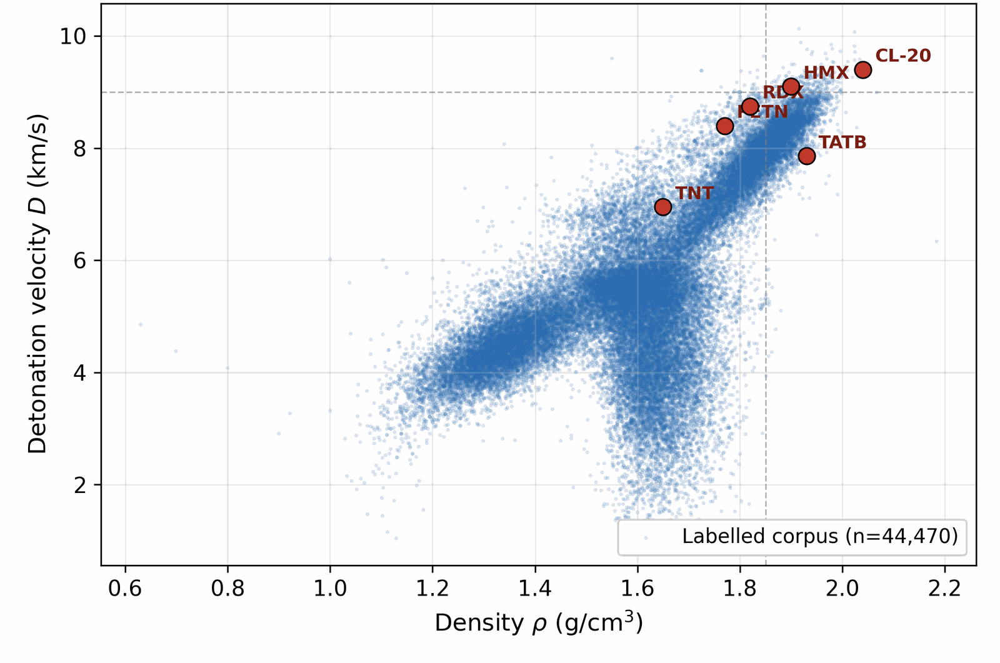
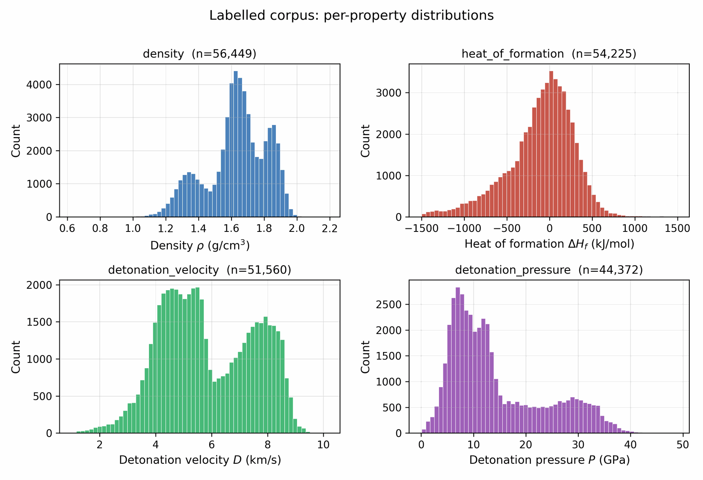
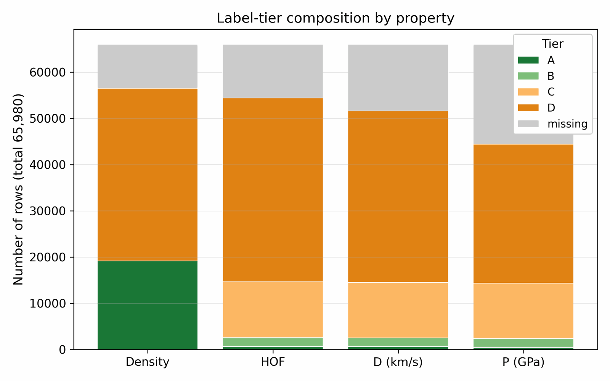
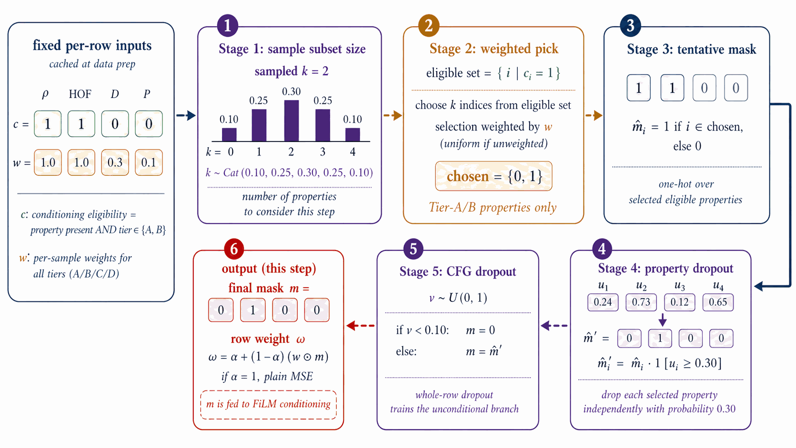
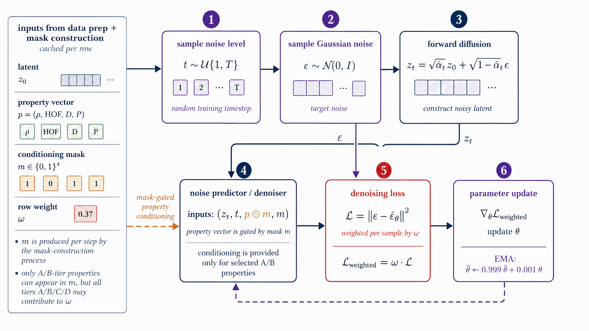
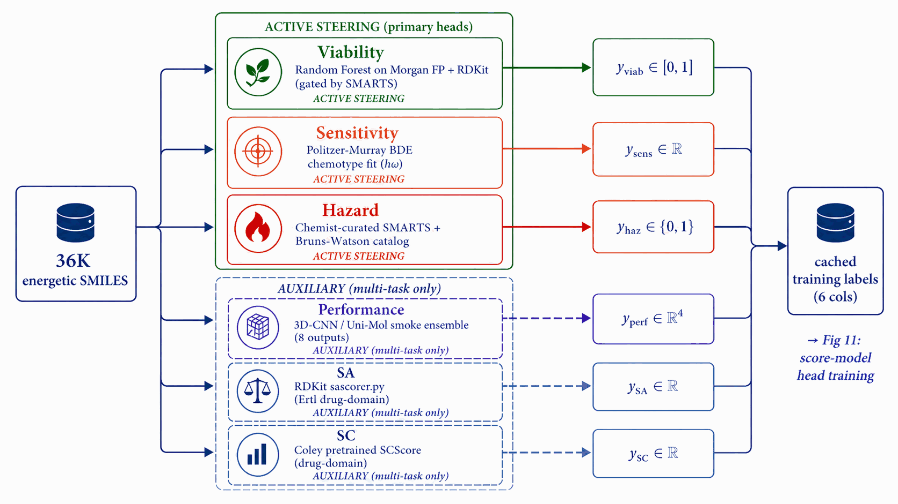
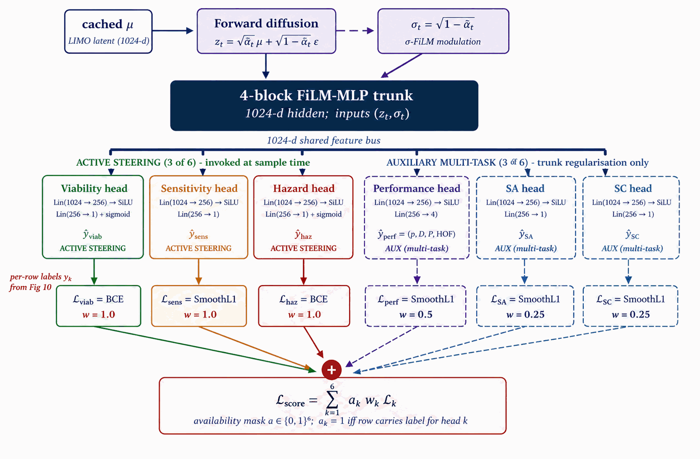
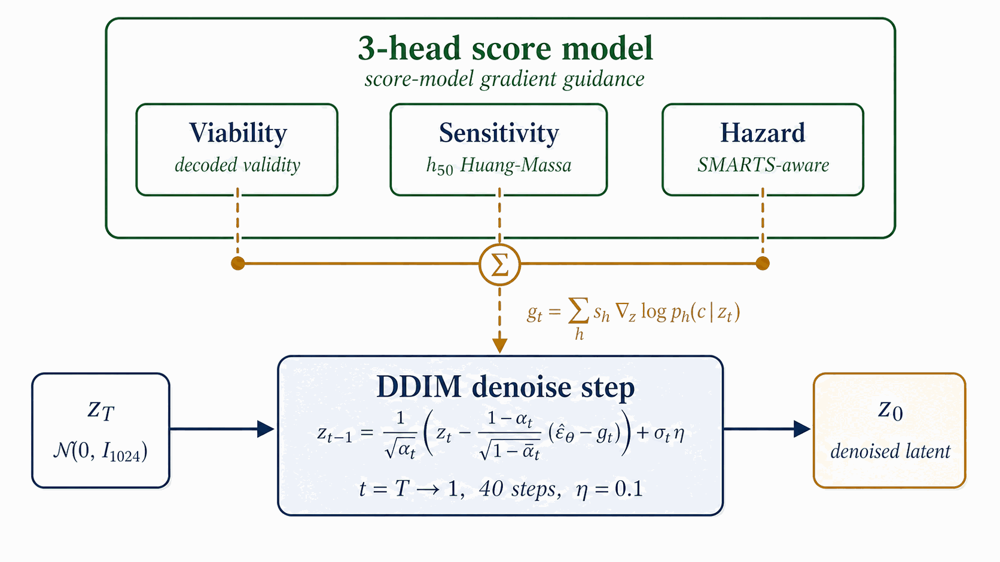
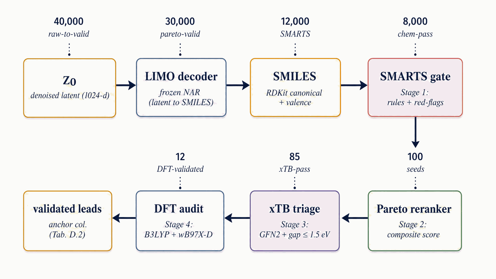
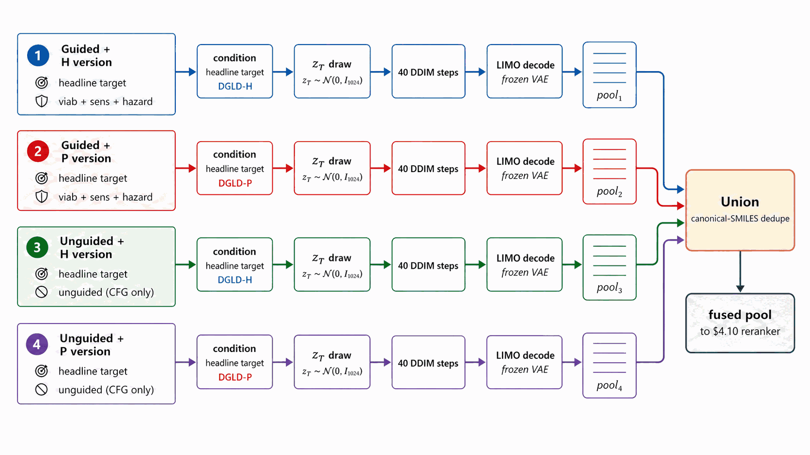

1 Department of Intelligent Systems, Afeka Tel-Aviv College of Engineering, Tel-Aviv, Israel
2 School of Computer Science, Faculty of Sciences, Holon Institute of Technology (HIT), Holon, Israel
* Correspondence: apersteiny@afeka.ac.il
.docx is compiled from it via the
html2doc pipeline against the official molecules-template.dot. Figures and
tables were renumbered by order of appearance during the reformat from the long-form preprint;
a final numbering/cross-reference audit is pending before submission.
Abstract: The design of new high-energy-density materials is a data-limited inverse-design problem: of roughly 66,000 labelled CHNO molecules only about 3,000 carry experimental or DFT-quality property values, so generative models trained on the full mixture either memorise the high-performance tail or extrapolate without calibration, and no new HMX-class compound has been disclosed in fifteen years. Here we introduce Domain-Gated Latent Diffusion (DGLD), a data-driven framework that couples generative inverse design to first-principles validation. A four-tier label-trust gate routes only high-quality labels into the conditional gradient while noisy labels train the unconditional prior; a multi-task score model supplies independently switchable sample-time steering over viability, sensitivity, and hazard; and a four-stage screening funnel (SMARTS gate, Pareto reranker, GFN2-xTB triage, and B3LYP/def2-TZVP density-functional theory) validates every candidate. DGLD yields twelve DFT-confirmed novel leads; the headline compound, 3,4,5-trinitro-1,2-isoxazole, reaches a calibrated density of 2.09 g cm−3 and a Kamlet–Jacobs detonation velocity of 8.25 km s−1 while remaining structurally distinct from all 65,980 training molecules (nearest-neighbour Tanimoto 0.27). Against four baselines on the same corpus, DGLD is the only method generating molecules simultaneously novel and on-target under first-principles validation. The label-gating recipe is domain-agnostic, requiring only a domain-appropriate validation funnel; code, model checkpoints, and 918 mined hard negatives are released openly.
Keywords: generative models; latent diffusion; inverse molecular design; high-throughput screening; energetic materials; high-energy density materials; density functional theory; materials informatics; structure–property relationships; data-driven discovery
Energetic-materials performance gains translate directly into reduced propellant mass, smaller warheads, and more efficient civilian gas-generators, yet the canonical anchors of the field (HMX and CL-20) were developed decades ago and no new HMX-class compound has been disclosed in fifteen years. The space of synthesisable CHNO small molecules with the right balance of crystal density, oxygen balance, heat of formation, and detonation kinetics is vast, but traditional discovery explores it slowly. Computational methods offer acceleration, yet each existing family has a fundamental limitation: empirical formulas (Kamlet–Jacobs [12]) are regime-limited; discriminative surrogates [15][16] score candidates but do not propose them; generative language models trained on energetic corpora memorise training data; and standard guidance methods [14] fail silently when the generative trajectory is as short as molecular generation requires. Compounding these challenges, the labelled corpus is tier-stratified: of ~66 k labelled rows only ~3 k come from experiment or DFT, with the rest from empirical formulas and 3D-CNN surrogates of sharply lower reliability.
We introduce Domain-Gated Latent Diffusion (DGLD). At training time, a four-tier label-trust hierarchy gates which examples drive the conditional gradient (experimental and DFT labels) and which train only the unconditional prior (Kamlet–Jacobs and surrogate labels), preventing miscalibrated data from corrupting the generation signal. At sample time, a multi-task score model with six property and safety heads injects per-step steering into the diffusion trajectory; each head acts as an independent on/off switch without retraining the backbone. Decoded candidates pass through a four-stage validation funnel: a SMARTS chemistry gate, a Pareto reranker, semi-empirical GFN2-xTB triage, and full DFT audit (B3LYP/6-31G(d) + \(\omega\)B97X-D3BJ/def2-TZVP).
DGLD yields 12 DFT-confirmed novel leads; the headline compound, trinitro-1,2-isoxazole (L1), reaches \(\rho_{\text{cal}} = 2.09\) g cm−3 and \(D_{\text{K-J,cal}} = 8.25\) km s−1, placing it within the HMX/CL-20 performance band at max-Tanimoto 0.27 to our 65 980-row labelled corpus (Section 2.2). DGLD behaves as a productive-quadrant generator: it samples molecules that are simultaneously novel relative to the labelled master and competitive with the HMX/CL-20 reference class on predicted detonation performance. Across three strong baselines, DGLD is the only method with consistent novel productive-quadrant coverage (simultaneously novel and on-target for performance): SMILES-LSTM memorises 18.3% of outputs exactly; SELFIES-GA returns 74% corpus rediscoveries and its best novel candidate collapses from \(D_{\text{surrogate}} = 9.73\) to \(D_{\text{DFT}} = 6.28\) km s−1 under DFT audit (a 3.5 km s−1 surrogate artefact); REINVENT 4 generates novel high-N heterocycles but peaks at \(D = 9.02\) km s−1. A second lead, E1 (4-nitro-1,2,3,5-oxatriazole), reaches \(D_{\text{K-J,cal}} = 9.00\) km s−1 from a chemically distinct scaffold family, pending thermal stability confirmation and an oxatriazole-class DFT anchor (Section 3). The tier-gating recipe is domain-agnostic; only the validation funnel changes per application.
Note on Figure 1. Hz-C2 top-1 surrogate values (3D-CNN scale): \(D\) = 9.39 km s−1, \(P\) = 38.7 GPa, within 5% of the strict targets. On the 6-anchor-calibrated K-J scale L1 reaches \(D_{\text{K-J,cal}}\) = 8.25 km s−1 and \(P_{\text{K-J,cal}}\) = 32.9 GPa, slightly below the strict thresholds but in the HMX-class band by anchor-relative ranking.

DGLD draws on, and departs from, several strands of prior work, reviewed below.
DGLD sits at the intersection of three lines of work: molecular generative modelling, diffusion models with classifier-style guidance, and property prediction for energetic materials. The central contribution being positioned is property-targeted molecular generation under tier-stratified labels, with end-to-end first-principles audit (DFT) on energetic chemistry. The literature reviewed below either supplies a building block we adopt (LIMO encoder, classifier-free guidance, FiLM conditioning, GFN2-xTB and PySCF for validation), defines a baseline we compare against (MolMIM, MOSES-style benchmarks), or stakes out a neighbouring problem domain (3D pocket-conditioned diffusion, drug-like generative benchmarking) whose techniques we deliberately do not transplant into the energetic-materials regime. We close the section by stating explicitly which gap DGLD fills.
VAE-based molecular generators learn a continuous latent over SMILES, SELFIES, or molecular graphs and navigate it for property optimisation. Gómez-Bombarelli et al. [gomez2018] introduced the encoder/decoder recipe over SMILES; the Junction-Tree VAE of Jin, Barzilay and Jaakkola [jin2018] moved the latent up to fragment graphs to guarantee chemical validity; CDDD [winter2019] learned the latent by translating between equivalent string representations and showed that the resulting descriptors transfer to property prediction; Mol-CycleGAN [maziarka2020] reframed property optimisation as image-to-image translation between molecule sets. SELFIES [krenn2020] replaced SMILES with a syntactically robust string representation in which every token sequence decodes to a valid graph, and is the representation we adopt at the encoder boundary.
Two more recent latent generators are particularly relevant to DGLD. LIMO [eckmann2022] couples an MLP-VAE over SELFIES with a non-autoregressive decoder, factoring decoding through a per-position categorical so that gradient-based latent optimisation does not have to differentiate through autoregressive sampling; LIMO is the encoder we fine-tune. MolMIM [reidenbach2023] trains a Perceiver-encoder [jaegle2021] mutual-information VAE on billion-scale SMILES and provides a strong no-diffusion baseline against which our latent-diffusion prior is compared.
Language-modelling approaches treat SMILES directly as a string. REINVENT [olivecrona2017] trained a recurrent generator on SMILES and biased it toward design objectives via reinforcement learning; Loeffler et al. [loeffler2024] describe REINVENT 4, the modern evolution that integrates multiple generator architectures (de novo RNN, scaffold decoration, fragment linking, Mol2Mol transformer) within a unified staged RL/CL framework with a plugin scoring subsystem, and is used here as an RL-based comparative baseline. REINVENT 4 biases generation via a policy-gradient reward signal over a pretrained prior; DGLD instead learns a conditional prior through latent diffusion, separating prior learning (training) from property steering (guidance), and requires no RL reward engineering at generation time. Several REINVENT 4 mechanisms are inspirationally relevant: the diversity filter (Murcko scaffold bucketing) is analogous to our Tanimoto novelty window; staged learning mirrors our guidance-weight annealing schedule. ChemTS [yang2017] combined an RNN prior with Monte-Carlo tree search; MolGPT [bagal2022] applied a GPT-style decoder with property tokens prepended for control. MoLFormer-XL [ross2022] and Chemformer [irwin2022] showed that BERT/T5-style pretraining on hundreds of millions of SMILES yields representations that transfer cleanly to property-prediction tasks. The flow-network approach of Bengio et al. [bengio2021] reformulates non-iterative diverse candidate generation as flow matching over an implicit reward landscape and is conceptually closer to our guided sampling than to autoregressive language modelling. On the graph side, DiGress [vignac2023] performs discrete denoising diffusion directly on molecular graphs, achieving exact validity at the cost of having to re-introduce property conditioning via a separate guidance term.
Denoising diffusion probabilistic models [ho2020] and the score-based formulation of Song and Ermon [song2019], later unified through a stochastic-differential-equation perspective [song2021], define the generative-modelling family that DGLD builds on. Latent diffusion [rombach2022] separates perceptual compression from prior modelling by running the diffusion process in the latent space of a frozen autoencoder, a recipe we transplant from images to molecules: the LIMO encoder fixes the latent geometry, and the diffusion model only has to learn the prior over that latent.
For property control we adopt the classifier-free guidance scheme of Ho and Salimans [ho2022], in which a single denoiser is trained jointly with and without the conditioning signal and the conditioning gradient is reconstructed at sample time: $$\hat{\epsilon}_{\theta}(z_t, c) \;=\; \epsilon_{\theta}(z_t, \emptyset) \;+\; w \cdot \big(\epsilon_{\theta}(z_t, c) - \epsilon_{\theta}(z_t, \emptyset)\big).$$ Classifier-free guidance avoids the separately-trained property predictor required by its noise-conditional ancestor, classifier guidance [dhariwal2021]. DGLD combines both regimes: classifier-free guidance over the four detonation targets, plus a small noise-conditional multi-task score model whose per-head gradients are added at every diffusion step (Section 4). Conditioning is injected into the residual blocks of the denoiser through FiLM-style affine feature-wise modulation [perez2018], the standard mechanism for property conditioning in image and molecular diffusion alike.
A parallel line of work runs diffusion directly on 3D molecular geometries rather than on a learned latent. Equivariant Diffusion (EDM) [hoogeboom2022] diffuses atom positions and types under SE(3)-equivariant networks, providing the architectural template for subsequent target-aware variants. DiffSBDD [schneuing2022] and TargetDiff [guan2023] condition the diffusion process on a 3D protein pocket; Pocket2Mol [peng2022] samples atoms autoregressively inside the pocket; DiffDock [corso2023] recasts molecular docking itself as a generative diffusion problem over translation, rotation, and torsion. MolDiff [peng2023] addresses the atom-bond inconsistency that arises when atom positions and bond types are diffused independently.
GeoLDM (Xu et al. [xu2023]) is the closest 3D-coordinate latent-diffusion analogue: it learns an SE(3)-equivariant latent over atom positions and types and runs the diffusion process there, so conditioning enters at the 3D-geometry level. DGLD instead diffuses a 1D string-derived latent (cached LIMO \(\mu\) over SELFIES), so conditioning is a function of the molecule's identity rather than of any particular conformer. The 1D-latent route avoids per-step conformer regeneration and is the natural fit for property targets that are themselves invariant under conformer choice.
DGLD differs from this family in two respects. First, the conditioning signal is a continuous physical property of the molecule itself (density, heat of formation, detonation velocity, detonation pressure), not the geometry of an external receptor; latent-space diffusion is the more natural fit and avoids 3D-conformer preprocessing at every training step. Second, the energetic-materials regime imposes a tier-stratified label-trust structure (computed K-J labels vs. measured detonation properties) that has no analogue in pocket-based drug design and that drives the conditioning-mask design of Section 4.
The Kamlet–Jacobs equations [kamlet1968] remain the closed-form workhorse for fast detonation-property estimates of CHNO explosives and supply our Tier C labels; they are regime-limited and under-predict in the high-nitrogen tail (Section 2.3, the Supplementary Information. Casey et al. [casey2020] train 3D convolutional networks on electronic-structure-derived volumetric inputs to predict detonation properties from first principles; we use an ensemble in this family as our fast post-rerank scorer. Uni-Mol [zhou2023] provides a 3D pre-training backbone whose representations transfer to organic property prediction and which the smoke-model ensemble draws on. Elton et al. [elton2018] showed that simple feature-engineered ML pipelines match Kamlet–Jacobs accuracy across a broad CHNO set, establishing the property-prediction baseline that any generative work must beat. The pre-experimental screening recipe used in Section 2.3, DFT-derived \(\rho\) and HOF, calibrated against a small set of reference explosives, then plugged into the Kamlet–Jacobs equations for \(D\) and \(P\), is a standard pattern in computational energetic-materials chemistry, applied across the field in different functional / basis / anchor combinations: Politzer and Murray [politzer2014] develop the BDE-anchored sensitivity correlations we adopt for the \(h_{50}\) head; Mathieu [mathieu2017] reviews the systematic-bias bands that motivate anchor-calibration. Specialised codes EXPLO5 [suceska2018] and Cheetah [fried2014] replace the closed-form K-J step with a thermochemical-equilibrium Chapman–Jouguet solver and a covolume EOS, and remain the absolute-value-grade reference; we use K-J as the closed-form approximation and acknowledge the absolute-value gap explicitly (Section 2.3). The recent Choi et al. review [choi2023] surveys the state of AI approaches for energetic materials by design and codifies the field's challenges and current best practices, and we adopt its taxonomy of property-prediction vs generation pipelines as the literature backdrop. Recent ML approaches to crystal density itself ([mlcrystdens2024]) are complementary to our gas-phase Bondi-vdW + 6-anchor-calibration recipe and would substitute cleanly for it once retrained on a polynitro-enriched corpus.
Sensitivity prediction is the harder discriminative half of the field. Nefati, Cense and Legendre [nefati1996] trained an early neural network on impact-sensitivity data; Mathieu [mathieu2017] reviewed the theoretical relationships between molecular structure, detonation performance, and sensitivity; Huang and Massa [huang2021] applied modern ML to the performance/stability trade-off, showing that h50 (the drop-weight height at which 50% of samples detonate on impact, a standard sensitivity measure) is learnable from descriptors and provides the regression target our hazard head approximates. The synthesis-chemistry review of Klapötke [klapotke2017] codifies the qualitative fragment priors (nitrogen-rich heterocycles, nitramines, azides) on which our motif-augmented training set is built.
Generative work targeting the energetic-materials high-energy tail is comparatively recent and is constrained by the small size of the labelled corpus. The closest spiritual analogue to DGLD is the constrained Bayesian optimisation in a VAE latent of Griffiths and Hernández-Lobato [griffiths2020], which navigates a learned molecular prior under chemistry constraints; classifier-free latent diffusion subsumes this recipe in a single end-to-end model whose gradient comes from the score function rather than from a separately-trained acquisition oracle. The performance/stability balancing study of Huang et al. [huang2021], already cited above for sensitivity prediction, is the property-prediction-side counterpart of the multi-head trade-off DGLD enforces at generation time. The bulk of the prior ML work on energetic materials has been discriminative; the four-tier label hierarchy and tier-stratified conditioning-mask of Section 4 and Section 4 are designed precisely to make property-targeted generation viable in this small-and-noisy-label regime. The most direct contemporary competitor is the property-conditioned RNN of [npjcompmat2025] (npj Computational Materials, in press), which couples an autoregressive SMILES generator to QM validation on energetic targets. The two methods differ on three axes that shape the headline numbers: (i) the prior is autoregressive RNN over SMILES vs latent diffusion over a frozen LIMO encoder, so DGLD trades exact-validity guarantees for property-targeted concentration on the high-tail manifold; (ii) the supervisory signal is property regression on a single tier vs the four-tier trust-gating recipe of Section 4, which keeps the ~30k Tier-D rows in the unconditional prior without contaminating the conditional gradient; (iii) the validation funnel is QM-only vs the four-stage SMARTS \(\to\) Pareto \(\to\) GFN2-xTB \(\to\) DFT chain of Section 4. Where the two papers agree is on the headline finding that energetic-materials generation requires post-decode physics validation; where they differ is on whether the prior should be tilted toward the high-tail before that validation runs.
Outside the energetic-materials niche, several general-purpose molecular property predictors set the methodological context. Chemprop / D-MPNN [yang2019] remains a strong message-passing-graph default; SchNet [schutt2018] introduced continuous-filter convolutions for atomistic systems and achieves DFT-level accuracy on energy and force predictions; OrbNet [qiao2020] uses symmetry-adapted atomic-orbital features to predict quantum-chemical observables at semi-empirical cost. We do not use these networks directly: the smoke-model 3D-CNN ensemble is trained against detonation outputs and is in-distribution for the energetic-materials task, while these graph and quantum-aware models would have to be re-fit to detonation labels before they could substitute for it. They define the broader prediction-quality envelope against which the smoke-model ensemble's accuracy on CHNO chemistry should be read.
The MOSES [polykovskiy2020] and GuacaMol [brown2019] benchmarks have standardised the evaluation of molecular generators on validity, novelty, uniqueness, and similarity-to-training metrics. The Fréchet ChemNet Distance [preuer2018] reports distributional similarity between generated and reference sets in a learned chemical-feature space and provides a pretrained-feature analogue of FID for chemistry. The chemical-space project of Reymond [reymond2015], with its enumerated GDB-13 and GDB-17 reference sets, bounds how much of small-molecule space remains untouched by generative models and contextualises any novelty claim. We adopt MOSES-style metrics in the Supplementary Information and treat FCD as a chemistry-class-transfer signal rather than a within-domain quality metric, since the ChemNet feature extractor is trained on drug-like ZINC+PubChem chemistry.
Synthesisability is a separate concern. The SA score of Ertl and Schuffenhauer [ertl2009] penalises uncommon ring fusions and rare fragments and is a fast, well-calibrated bound on accessibility; the SCScore of Coley et al. [coley2018] learns a complexity proxy from a reaction corpus and complements SA by rewarding fragments that appear as reaction products. We apply both as hard caps in the rerank pipeline. Tanimoto similarity [rogers1960] on Morgan fingerprints provides a simple, well-understood novelty bound against the training set; we use a window (0.20, 0.55) to keep candidates close enough to known chemistry to be plausible but far enough to count as new.
The validation half of the DGLD pipeline relies on three external tools that are not part of the generative-modelling literature. GFN2-xTB [bannwarth2019] is the semi-empirical tight-binding method we use for sample-time HOMO–LUMO gap triage on top leads (Section 2.3, the Supplementary Information); it runs in seconds per molecule on CPU, is well-calibrated for organic CHNO, and provides a stability proxy that is independent of the 3D-CNN surrogate's training distribution. The gpu4pyscf bindings on top of the PySCF framework [sun2020] supply our DFT pipeline (Section 2.3, the Supplementary Information. GPU offloading reduces a single B3LYP/6-31G(d) opt + Hessian for a 15–25-atom CHNO molecule from hours on CPU to under one hour on a single A100, which is what makes per-lead first-principles validation budget-feasible. AiZynthFinder [genheden2020] performs the retrosynthetic plausibility check of Section 2.4 via Monte-Carlo tree search over a USPTO template set against a ZINC in-stock catalog; we treat it as a positive-only check, since an empty result reflects template-database scope rather than unsynthesisability. The accuracy expected of any DFT functional we use is calibrated by the GMTKN55 benchmark suite of Goerigk et al. [goerigk2017], which evaluates the density-functional zoo over a broad cross-section of main-group thermochemistry, kinetics and noncovalent interactions and grounds our choice of functional and basis.
Section 2 is structured results-first: Section 2.2 reports the gated Pareto reranker top leads (Stages 1+2 of the validation chain); Section 2.3 reports physics validation (xTB triage and DFT confirmation, Stages 3+4); Section 2.4 combines novelty, retrosynthesis, and the E-set scaffold-diversity audit; Section 2.5 contrasts DGLD against no-diffusion baselines; Section 2.6 is the ablation summary. The four headline targets are \(\rho \ge 1.85\) g cm−3, \(D \ge 9.0\) km s−1, \(P \ge 35\) GPa and Tanimoto novelty \(\le 0.55\) against every training row, validated through the four-stage chain SMARTS \(\to\) Pareto \(\to\) xTB \(\to\) DFT documented in Section 4 (Figure 21). Hyperparameters and the production configuration (CFG=7, pool \(\ge\) 40k per denoiser, alpha-anneal disabled) are documented in Section 4 and the Supplementary Information (Table B.5) and are not re-derived here.
Applying Section 4 gated multi-objective reranker (hard filters, banded performance score, viability, novelty, sensitivity, alerts) to the pool=40 000 candidate set: of the top-400 single-objective candidates, 45 are rejected by the hard filters (poly-nitro-on-C2, MW < 130, OB > +25 %); the 355 survivors define a Pareto front of 34 candidates (Figure 4). The top-five Pareto leads are shown in Figure 3. 89/100 of the merged top-100 originate from the smallest unguided pool reranked by the Pareto scaffold composite (the rank-1 trinitro-isoxazole itself comes from a guided run); guidance acts as a high-precision lever on the top of the funnel, not as the source of bulk Pareto coverage (source-pool breakdown in the Supplementary Information.

The top-five leads (Figure 3, L1–L5) have viability 0.83–1.00, MW between 147 and 233 Da, and oxygen balance within ±15 %. Lead L1 is the aromatic trinitro-1,2-isoxazole, predicted at \(\rho=2.00\) g cm−3, \(D=9.56\) km s−1, \(P=40.5\) GPa, comparable to HMX. The Pareto front contains 34 candidates with composite \(\ge\) 0.50 and viability \(\ge\) 0.83 (Figure 4). Naive single-objective ranking (without the gating layer) puts a polynitro-on-C2 model-cheat at the top; the gates correctly reject it (full SMARTS-trace and rejected-candidate property tabulation in the Supplementary Information.

Stage 3 (xTB triage). The merged top-100 from Stages 1+2 is the input to Stage 3 GFN2-xTB triage at the 1.5 eV HOMO–LUMO gap gate: 85/100 survive, and 6/8 of the smaller production gated top-8 also survive. The xTB triage agrees with the Section 3 chemistry-expert critique: open-chain and strained spiro candidates fall out as low-gap, while the aromatic isoxazole and small saturated heterocycles survive cleanly. The full xTB recipe (RDKit ETKDGv3 + MMFF94 + xTB --opt tight) is in the Supplementary Information. Pool-size dependence: repeating the xTB triage on the gated top-15 of an unguided pool=80 000 run, 13/15 survive the same gate, indicating that classifier guidance can drive the sampler into modes that score high on learned proxies but fail at frontier-orbital electronic stability; a larger unguided pool with the same gating produces a more physically-credible final set.
Stage 4 (DFT audit). First-principles DFT audit at B3LYP/6-31G(d) optimisation + \(\omega\)B97X-D3BJ/def2-TZVP single-point on the 12 chem-pass leads alongside two anchors (RDX, TATB) using GPU4PySCF (density from Bondi van-der-Waals integration with packing 0.69). All twelve chem-pass leads + two anchors are real local minima (no imaginary frequencies; min real modes 9–52 cm−1); three SMARTS-rejected reference scaffolds (R2, R3, R14) optimised under the same protocol are in the Supplementary Information. The 73 candidates that pass Stage 3 but not Stage 4 are accounted for in the Supplementary Information (45 rejected by Stage 2 hard filters; 28 fail K-J/imaginary-frequency/composition gates).
6-anchor calibration. A linear 6-anchor (RDX, TATB, HMX, PETN, FOX-7, NTO) calibration gives \(\rho_{\text{cal}} = 1.392\,\rho_{\text{DFT}} - 0.415\) and HOF\(_{\text{cal}} = \)HOF\(_{\text{DFT}} - 206.7\) kJ mol−1, with leave-one-out RMS \(\pm 0.078\) g cm−3 on \(\rho\) and \(\pm 64.6\) kJ mol−1 on HOF (full intercept derivation in the Supplementary Information–C.3). Calibrated densities span \(\rho_{\text{cal}} \in [1.84, 2.09]\) g cm−3; L1 raw DFT \(\rho_{\text{DFT}}=1.80\) calibrates to \(\rho_{\text{cal}}=2.09\) g cm−3 (the highest of the set), and its raw HOF\(_{\text{DFT}}=+229.5\) kJ mol−1 calibrates to \(+22.9\) kJ mol−1.
Kamlet–Jacobs recompute and headline corroboration. Two K-J applications appear: (i) per-lead calibrated branch (Table 2): K-J on DFT-calibrated \((\rho_{\text{cal}},\,\text{HOF}_{\text{cal}})\) for ranking; (ii) population residual branch (Table C.4): K-J on raw experimental \((\rho,\,\text{HOF})\) from 575 Tier-A labelled rows to quantify K-J under-prediction at high N-fraction. Calibrated K-J velocities span \(6.71\)–\(8.25\) km s−1 across the 12 chem-pass leads. L1 calibrated K-J \(D = 8.25\) km s−1; the 1.31 km s−1 residual to the 3D-CNN surrogate (9.56 km s−1) is larger than the K-J anchor residuals in L1's own composition regime (L1: \(f_N \approx 0.29\), OB \(\approx +8\,\%\), placing it in PETN's K-J-reliable regime, not the high-N RDX/HMX/FOX-7 under-prediction band). Note that L1's OB sits at the upper boundary of the standard oxygen-deficient regime (\(d = 2a + b/2 = 6\) vs L1's \(d = 7\)); we apply Kamlet–Jacobs in its unified product-distribution form (the standard treatment for mildly oxygen-rich CHNO; see Kamlet–Jacobs 1968 §III). The 1.31 km s−1 gap is therefore plausibly 3D-CNN surrogate over-prediction in the sparsely-represented polynitroisoxazole region rather than K-J failure. The DFT-K-J recompute places L1 in the HMX-class regime by relative ranking against anchors; absolute \(D\) values require a thermochemical-equilibrium covolume solver (Section 3). Full K-J residual decomposition (PETN/NTO chemistry; \(r(f_N,\text{residual})=+0.43\), \(p = 4\times 10^{-27}\) on 575 Tier-A rows) is in the Supplementary Information–C.7. An independent Cantera ideal-gas CJ recompute ranks L1, L4, L5 as RDX-class; absolute \(D\) values require BKW/JCZ3 covolume corrections (Section 3), full discussion in the Supplementary Information.

Cross-check on SMARTS-rejected candidates. The same DFT pipeline applied to three of the 23 SMARTS-rejected candidates (rank-2 N-nitroimine, rank-3 polyazene, rank-14 azo-amino-nitrate) finds them to be real geometric minima at B3LYP/6-31G* (min real frequencies 33–47 cm−1). The chemist rejection is motif-level (shock-sensitivity, friction-trigger risks beyond gas-phase DFT), not geometric: the SMARTS and DFT layers are complementary, not redundant. The hazard-head post-hoc filtering recovers all 23 SMARTS rejects with perfect recall by construction and exposes 66 additional candidates on which the SMARTS catalog is silent the Supplementary Information.
| Anchor | \(\rho_{\text{exp}}\) (g cm−3) | HOF\(_{\text{exp}}\) (kJ mol−1) |
|---|---|---|
| RDX | 1.82 | +70 |
| TATB | 1.94 | −141 |
| HMX | 1.91 | +75 |
| PETN | 1.77 | −538 (condensed-phase 298 K from LLNL Explosives Handbook, Dobratz 1981; literature range −504 to −539 kJ mol−1 depending on measurement method; the chosen value is within the ±64.6 kJ mol−1 LOO RMS) |
| FOX-7 | 1.89 | −134 |
| NTO | 1.93 | −129 |
| ID | \(\rho_\mathrm{cal}\) (g cm−3) | HOF\(_\mathrm{cal}\) (kJ mol−1) | \(D_\mathrm{cal}\) (km s−1) | \(\delta D\) (km s−1) | \(P_\mathrm{cal}\) (GPa) | \(\delta P\) (GPa) | K-J formula bias (typical, km s−1) | \(\partial D/\partial\rho\) |
|---|---|---|---|---|---|---|---|---|
| L1 | 2.093 | +22.9 | 8.25 | ±0.28 | 32.9 | ±2.8 | −0.1 ± 0.4 (\(f_N \approx 0.29\), PETN-like) | 2.88 |
| L2 | 1.949 | −89.3 | 7.78 | ±0.24 | 28.1 | ±2.3 | −0.4 ± 0.4 | 2.86 |
| L3 | 1.995 | +115.4 | 7.50 | ±0.23 | 26.5 | ±2.2 | −0.4 ± 0.4 | 2.71 |
| L4 | 1.941 | +292.1 | 6.71 | ±0.25 | 20.9 | ±1.9 | −0.7 ± 0.4 (high-\(f_N\)) | 2.48 |
| L5 | 1.942 | −153.1 | 7.99 | ±0.30 | 29.6 | ±2.8 | −0.3 ± 0.4 | 2.95 |
| L9 | 1.909 | +329.8 | 7.33 | ±0.23 | 24.6 | ±2.1 | −0.5 ± 0.4 | 2.73 |
| L11 | 1.900 | −159.0 | 7.88 | ±0.24 | 28.5 | ±2.4 | −0.4 ± 0.4 | 2.95 |
| L13 | 1.859 | +115.1 | 7.36 | ±0.24 | 24.5 | ±2.2 | −0.4 ± 0.4 | 2.80 |
| L16 | 1.995 | +115.4 | 7.50 | ±0.23 | 26.5 | ±2.2 | −0.4 ± 0.4 | 2.71 |
| L18 | 1.839 | +182.1 | 7.09 | ±0.23 | 22.6 | ±2.0 | −0.5 ± 0.4 | 2.72 |
| L19 | 1.905 | −373.3 | 7.24 | ±0.33 | 24.0 | ±2.6 | −0.6 ± 0.4 (high-\(f_N\)) | 2.71 |
| L20 | 1.983 | −12.0 | 7.41 | ±0.23 | 25.8 | ±2.1 | −0.4 ± 0.4 | 2.69 |
Literature context for L1. The polynitroisoxazole family is established in the energetic-materials literature ([sabatini2018][konnov2025]); the isomeric 3,4,5-trinitro-1H-pyrazole [herve2010] is the closest fully-substituted ring previously characterised. The 3,4,5-trinitro-1,2-isoxazole isomer DGLD proposes is absent from the 65 980-row labelled master (max-Tanimoto 0.27) and from PubChem; it is therefore a chemotype-class rediscovery with a positionally novel substitution pattern.
Three audits frame the merged top-100 against PubChem, public USPTO retrosynthesis templates, and a scaffold-distinct E-set extension. The headline is that DGLD generates a chemotype distribution (10 DFT leads / 8 Bemis–Murcko scaffolds / 6 families), not a single isoxazole hit.
Of the merged top-100, 96/97 are absent from PubChem [23] (PUG REST on canonical SMILES; 3 transient REST errors excluded; the one rediscovery is 1-nitro-1H-tetrazol-1-amine at rank 56). Independently, 97/100 are absent from the 65 980-row labelled master; the three rediscoveries (dinitramide, 1,2-dinitrohydrazine, N,N′-dinitrocarbodiimide) confirm the model rediscovers established high-density CHNO motifs. Zero of the 100 candidates lie within Tanimoto 0.70 of any training row, and zero are exact matches in the 694 518-row augmented corpus (Table 3); the candidates are more distant from the augmented corpus than from the labelled master alone, despite the augmented corpus being >10× larger. The strengthened SMARTS catalog (N-nitroimines and open-chain polyazene/azo-nitro motifs) retains 77/100 of the merged top-100; the rank-1 trinitro-isoxazole survives (per-class breakdown in the Supplementary Information.
| Reference set | Size | Median NN-Tanimoto | p25 / p75 | fraction \(>0.55\) | fraction \(>0.70\) | exact match |
|---|---|---|---|---|---|---|
| Labelled master | 65 980 | 0.36 | 0.32 / 0.42 | 3 % | 1 % | 1 % |
| Augmented training corpus | 694 518 | 0.32 | 0.29 / 0.38 | 1 % | 0 % | 0 % |
AiZynthFinder [68] with public USPTO expansion + filter policies and the ZINC in-stock catalog (200 MCTS iter, 300 s/target) was applied to L1, L4, L5 and then extended to the remaining nine chem-pass leads. L1 returns 9 productive routes; the top route is 4 steps with state score 0.50 (Table 4). L4, L5, and the nine extension leads return zero productive routes within budget; reproduced at 5× budget (1000 MCTS iter, 1800 s) on L4/L5. The L1 disconnection sequence (electrophilic ring-nitration; Boc protection; DPPA-mediated Curtius rearrangement on 4,5-dinitro-1,2-isoxazole-3-carboxylic acid), its hazard caveats (acyl-azide intermediate at primary-explosive class), and the ZINC catalog gap on energetic-domain intermediates are documented in the Supplementary Information. The 1/12 hit rate quantifies a public-USPTO drug-domain template-database gap, not unsynthesisability of the candidates; an energetics-domain template extension is flagged as community follow-up in Section 3.
| ID | Scaffold | Routes found | Top-route steps | State score |
|---|---|---|---|---|
| L1 | aromatic isoxazole | 9 | 4 | 0.50 |
| L4 | tetrazoline nitramine | 0 (only target node) | n/a | 0.05 |
| L5 | acyl oxime nitrate | 0 (only target node) | n/a | 0.05 |
To probe scaffold diversity beyond the single sampling stream of the L-set, we mined a 500-candidate extension pool from the four sampling runs of Section 2.2 under the same Stage 1 SMARTS gate but with a Tanimoto-NN cap of 0.55 against L1–L20. The 500 SMILES were pre-screened with GFN2-xTB on Modal CPU; 10 scaffold-distinct survivors were promoted to A100 DFT under the same protocol used for L1–L20 and post-corrected with the 6-anchor calibration. By Bemis–Murcko bookkeeping the 10 picks span 8 distinct scaffolds across 6 chemotype families: 1,2,3,5-oxatriazole (E1), NH-pyrrole nitroaromatic (E6), acyclic and small-ring nitramines (E2–E4), small-ring nitrate esters (E5, E7), geminal polynitro carbocycle (E8), bare 1H-tetrazole (E9), and nitro-imidazoline (E10); four families (oxatriazole, NH-pyrrole, acyclic nitramine, geminal polynitro carbocycle) are absent from the L-set entirely.
| ID | SMILES | chemotype family | formula | n_atoms | xTB gap (eV) | graph unchanged |
|---|---|---|---|---|---|---|
| E1 | O=[N+]([O-])c1nnon1 | 1,2,3,5-oxatriazole | C1N4O3 | 8 | 2.07 | yes |
| E2 | O=[N+]([O-])NC([N+](=O)[O-])[N+](=O)[O-] | acyclic gem-dinitro nitramine | C1H2N4O6 | 13 | 1.54 | yes |
| E3 | O=[N+]([O-])Nc1conc1[N+](=O)[O-] | isoxazole nitramine | C3H2N4O5 | 14 | 2.10 | yes |
| E4 | O=[N+]([O-])NC1=CC1([N+](=O)[O-])[N+](=O)[O-] | cyclopropene nitramine | C3H2N4O6 | 15 | 1.59 | yes |
| E5 | O=[N+]([O-])OCC1([N+](=O)[O-])C=N1 | small-ring nitrate ester | C3H3N3O5 | 14 | 2.22 | yes |
| E6 | O=[N+]([O-])c1c[nH]c([N+](=O)[O-])c1 | NH-pyrrole nitroaromatic | C4H3N3O4 | 14 | (retry) | yes |
| E7 | N=C1C(O[N+](=O)[O-])=CC1[N+](=O)[O-] | cyclobutenimine nitrate ester | C4H3N3O5 | 15 | 1.68 | yes |
| E8 | CC1(C([N+](=O)[O-])[N+](=O)[O-])C=C([N+](=O)[O-])C=C1[N+](=O)[O-] | geminal polynitro carbocycle | C7H6N4O8 | 25 | 1.57 | yes |
| E9 | c1nnn[nH]1 | bare 1H-tetrazole (no NO2) | CH2N4 | 5 | 4.92 | yes |
| E10 | O=[N+]([O-])C1=NCC=N1 | nitro-imidazoline | C3H3N3O2 | 11 | 1.65 | yes |
†E2 D and P are flagged: OB = +28.9 % exceeds the +25 % K-J reliability limit; these values are upper-bound estimates only (see Section 2.4 E2 audit). E9 K-J is undefined (OB < −200 %).
| ID | ρDFT | ρcal | HOFDFT (kJ mol−1) | HOFcal (kJ mol−1) | DK-J,cal (km s−1) | PK-J,cal (GPa) | h50BDE (cm) |
|---|---|---|---|---|---|---|---|
| E1 | 1.765 | 2.043 | 320.1 | 113.5 | 9.00 | 38.6 | 82.7 |
| E2 | 1.730 | 1.994 | 42.7 | −164.0 | 9.22† | 40.0† | 38.3 |
| E3 | 1.678 | 1.921 | 214.8 | 8.1 | 7.35 | 24.9 | 38.3 |
| E4 | 1.669 | 1.909 | 332.4 | 125.8 | 7.39 | 25.1 | 38.3 |
| E5 | 1.590 | 1.798 | 195.1 | −11.6 | 7.19 | 22.9 | 24.8 |
| E6 | 1.576 | 1.779 | 123.5 | −83.2 | 6.58 | 19.1 | 38.3 |
| E7 | 1.584 | 1.790 | 235.5 | 28.8 | 6.74 | 20.1 | 24.8 |
| E8 | 1.580 | 1.784 | 171.0 | −35.7 | 6.73 | 20.0 | 44.1 |
| E9 | 1.453 | 1.608 | 506.9 | 300.2 | n/a | n/a | 53.8 |
| E10 | 1.483 | 1.649 | 249.1 | 42.5 | 5.52 | 12.8 | 53.8 |
E1 oxatriazole as a co-headline finding. Under the same 6-anchor calibration applied to L1, E1 (4-nitro-1,2,3,5-oxatriazole) reaches \(\rho_{\text{cal}} = 2.04\) g cm−3, \(D_{\text{K-J,cal}} = 9.00\) km s−1, \(P_{\text{K-J,cal}} = 38.6\) GPa, with a Politzer–Murray BDE-correlated h50 of 82.7 cm; both E1's calibrated \(D\) and \(\rho\) are higher than L1's. The 1,2,3,5-oxatriazole ring system has known thermal/Lewis-acid ring-opening pathways (Sheremetev 2007; Katritzky 2010); a dedicated BDE and DSC/TGA stability screen is required before E1 is promoted to synthesis priority the Supplementary Information caveat block). Two honest readings of E1's headline number are possible without an oxatriazole-class anchor: (i) E1 is genuinely stronger than L1, giving the paper two HMX-class leads from disjoint chemotype families; or (ii) the K-J residual is chemotype-dependent and E1 is upper-bounded until an oxatriazole-anchor recompute (a thermochemical-equilibrium CJ on calibrated inputs and an oxatriazole-class anchor extension are scoped as future work in Section 3).
Of the 10 E-set candidates, 4 of 9 with defined K-J clear \(D_{\text{K-J,cal}} \ge 7.0\) km s−1 (E1–E4); 8 of 9 have h50BDE \(\ge\) 30 cm. E9 (bare 1H-tetrazole) is a deliberate filter-check: K-J is undefined at its oxygen balance and Stage 4 correctly leaves \(D\) and \(P\) unreported. E2's K-J \(D\) (9.22 km s−1) is upper-bound only because its OB = +28.9 % exceeds the +25 % K-J reliability limit the Supplementary Information. The L-set sits at the upper edge of a credible distribution; L1 and E1 are two HMX-class picks from chemically distinct families.
Four no-diffusion baselines were run through the same downstream pipeline on the same training corpus to isolate the contribution of the diffusion prior and guidance. The Gaussian-latent control and the matched-compute guided-vs-unguided headline are reported in the Supplementary Information and the Supplementary Information respectively. Results are in Table 7 and Figure 6.
| Method / condition | top-1 composite (lower = better) | top-1 \(D\) (km s−1) | top-1 \(\rho\) (g cm−3) | top-1 \(P\) (GPa) | top-1 max-Tani to LM | seeds | memo rate |
|---|---|---|---|---|---|---|---|
| SMILES-LSTM (no diffusion) | 0.083 | 9.58 | 1.96 | 40.0 | 1.000 (exact LM match) | 3 | 18.3% \(\pm\) 0.5% |
| MolMIM 70 M (drug-domain pretrain, no diffusion) | 4.79 | 7.70 | 1.76 | 25.5 | 0.625 | 1 | n.d. |
| SELFIES-GA (property optimisation, 2 000 pool, 30 gen)† | n.c.† | 9.54 | 1.994 | 40.9 | 1.000 (exact LM match; 75/100 rediscoveries) | 1 | 75% |
| REINVENT 4 (N-frac RL, 40k pool, seed 42)‡ | 0.42‡ | 9.02‡ | 1.85‡ | 34.5‡ | 0.57 (aminotetrazine); 0.32–0.38 (seeds 1-2) | 3 | near-zero <0.1% (0.04% exact match, seeds 1-2; <1% novelty-window, seed 42) |
| DGLD Hz-C0 = SA-C0 unguided (cfg-only) | 0.451 \(\pm\) 0.126 | 9.44 \(\pm\) 0.07 | 1.93 \(\pm\) 0.01 | 39.7 \(\pm\) 0.6 | 0.61 \(\pm\) 0.10 | 6 | 0% |
| DGLD Hz-C2 viab+sens+hazard | 0.485 \(\pm\) 0.152 | 9.39 \(\pm\) 0.04 | 1.91 \(\pm\) 0.03 | 38.7 \(\pm\) 0.6 | 0.27 \(\pm\) 0.03 | 3 | 0% |

SELFIES-GA collapses under DFT audit. SELFIES-GA (2k-molecule pool, 30 generations) returns 75/100 top candidates as exact corpus rediscoveries (top-1 is a rediscovery); the best novel candidate at 2k is rank 5 (\(D=9.39\) km s−1, max-Tanimoto 0.487); at 40k pool, the best novel outlier reaches \(D_{\text{surrogate}}=9.73\) km s−1 but collapses to \(D_{\text{DFT}}=6.28\) km s−1 under the same DFT audit chain applied to DGLD leads (3.5 km s−1 surrogate artefact; the 3D-CNN is not calibrated for nitro-oxadiazole/triazole fused scaffolds). SMILES-LSTM (2-layer, 6 M parameters, trained on the same 326 k SMILES corpus): top-1 is an exact labelled-master rediscovery (max-Tanimoto = 1.000); memorisation rate 18.3% ± 0.5% across 3 seeds, seed-stable. The best novel top-1 is a 5-atom aminotriazole fragment with no 3D-CNN score; the model reproduces training data, not new energetic leads. MolMIM 70 M (drug-domain pretrained): top-1 novel at Tanimoto 0.625 but at \(D=7.70\) km s−1, far below HMX; uncalibrated for the energetic regime. REINVENT 4 (N-fraction RL reward, 3 seeds, 40k pool): generates genuinely novel high-N heterocycles with exact memorisation below 0.1%; seed-42 top-100 Uni-Mol-scored at top-1 \(D=9.02\) km s−1, 0.37 km s−1 below DGLD Hz-C2. N-fraction RL is a useful novelty lever but does not optimise directly for the D/ρ/P targets DGLD conditions on. DGLD Hz-C2 is the only condition with consistent novel productive-quadrant coverage confirmed at DFT level. the Supplementary Information lists the ten most-novel candidates from each baseline pool.

Note on Figure 7 score conventions. The composite score \(S\) on the \(y\)-axis is the higher-is-better Stage-1+2 reranker success score (range 0–1), not the lower-is-better Pareto-reranker penalty tabulated in Table 7, Figure 6, and Table F.4. Cross-figure ranking is consistent (DGLD Hz-C2 best on both) but absolute values are not comparable.
Distribution-learning metrics. SMILES-LSTM has FCD = 0.52 against a 5 000-row labelled master sample (distributionally indistinguishable because it reproduces labelled rows); DGLD has FCD = 24–26 across guidance conditions: the diffusion sampler performs a targeted search off the prior, not corpus mimicry, with anti-correlation between FCD and Pareto-reranker composite within DGLD confirming the design intent. Full small-multiples (validity, scaffold uniqueness 659–1262, IntDiv1 0.818–0.838) are in the Supplementary Information.

Seven ablations measure the contribution of each system component to the headline. Table 8 lists the headline result of each; full prose, sub-tables, and figures are in the Supplementary Information. The forest plot of effect sizes (Figure 9) summarises the guidance-axis ablations visually.
| Ablation | What is varied | Headline result | Detail |
|---|---|---|---|
| Tier-gate | label-trust mask on / off | Keep-rate 4.6 % → 53.9 % when off; sampler collapses to poly-N open chains; val loss +0.089. | F.6 |
| Diffusion vs Gaussian prior | conditional latent vs \(\mathcal{N}(0,I)\) | Top-1 \(D = 9.47\) vs \(9.02\) km s−1 (+0.45); 4.6 % vs 48 % keep-rate reversal shows the prior concentrates on the high-\(D\) tail. | F.2 |
| Multi-head guidance | C0 / C1 / C2 / C3 head combinations | Top-1 \(D\) nearly invariant (9.44–9.53 km s−1); guidance reduces scaffold count from 12 to 5 (production C2 default). | F.3 |
| Hazard / SA axis (multi-seed) | per-head scale grid × 3 seeds | Hz-C2 most novel (max-Tani 0.27 ± 0.03); SA-C3 worsens composite by 13 % (production \(s_{\text{SA}} = 0\)). | F.4 |
| Self-distillation budget | 137 vs 918 hard negatives | Worst-offender model-cheat (gem-tetranitro) demoted by −0.10 absolute at 918; required for steer-off. | F.1, D.9 |
| Pool fusion | 1 lane × 40k vs 5 lanes × 100k | Post-filter yield 966 → 4 639 (+5×); scaffolds 7 → 24; max \(D\) 9.51 → 9.79 km s−1. | F.5 |
| CFG scale | \(w \in \{5, 7, 9\}\) | \(w = 7\) is the empirical optimum (983 final candidates vs 528 at \(w = 5\), 427 at \(w = 9\)). | Section 4, D.8 |

What each component contributes. The tier-gate is the single largest contributor: removing it collapses the sampler to high-N degenerate open chains (53.9 % keep-rate, no ring chemistry) rather than the ring-bearing high-density manifold the production model occupies. The diffusion prior contributes a +0.45 km s−1 \(D\)-lift over a compute-matched Gaussian-latent control, whose 48 % vs 4.6 % keep-rate reversal confirms that the diffusion prior's role is not chemical-plausibility filtering (a Gaussian decode through frozen LIMO does that easily) but distribution concentration on the high-\(D\) tail. Multi-head guidance trades scaffold diversity for novelty: hazard-axis C2 reaches max-Tanimoto 0.27 (the most novel condition) at the cost of scaffold count 5 vs 12. Pool fusion across 5 lanes lifts post-filter yield nearly five-fold (4 639 vs 966 candidates, +5\(\times\)) without lifting top-1, surfacing 24 Bemis–Murcko scaffolds vs 7.
Seed-variance context for the headline. Per-condition seed variance (3-seed s.d. on top-1 composite, range 0.106–0.184) is comparable to the across-condition mean differences, so the production C2 default is justified by the most-novel result rather than a sharp performance lift; the qualitative ablation conclusions are robust to seed across all six guidance axes (Table F.4, full multi-seed table). The 6-seed unguided baseline gives the tightest mean (top-1 composite 0.451 ± 0.126); the SA-axis SA-C3 (viab+sens+SA) is the worst at 0.698 ± 0.015.
What is ruled out. A drug-domain SA-gradient head (RDKit SAScorer, calibrated on Reaxys/pharma reaction corpora) worsens the composite by 13 % in our energetic-materials regime; production therefore uses \(s_{\text{SA}} = 0\). The SC head is retained as an architectural slot for backward compatibility but is not plumbed into the sample-time gradient sum. Both heads add \(\sim\)2 × 256k parameters of trunk-regularisation supervision during training the Supplementary Information contains the full SA / SC drug-domain transfer-head story).
DGLD’s central result is that tier-gated training and switchable sample-time steering together let a latent diffusion model act as a productive-quadrant generator: it proposes molecules that are simultaneously novel relative to the labelled corpus and competitive with the HMX/CL-20 reference class under first-principles validation. The two headline leads, L1 (3,4,5-trinitro-1,2-isoxazole) and E1 (4-nitro-1,2,3,5-oxatriazole), arise from disjoint chemotype families on a single sampling run, which argues against reading either placement as a sampling artefact. The mechanism that makes this possible is the label-trust gate: routing only the ~3,000 experimental and DFT rows into the conditional gradient, while the ~63,000 lower-confidence rows train only the unconditional prior, prevents miscalibrated Kamlet–Jacobs and surrogate labels from steering generation toward physically implausible high-scoring regions, the failure mode visible in the SELFIES-GA baseline, whose best novel candidate loses 3.5 km s−1 under DFT audit.
Relative to prior work, DGLD occupies a distinct position. Discriminative property surrogates score candidates but do not propose them; generative language models trained on energetic corpora tend to memorise, as the SMILES-LSTM baseline’s 18.3% exact-rediscovery rate shows; and standard classifier guidance degrades over the short trajectories molecular generation requires. By coupling generative inverse design to a graded validation funnel that ends in density-functional theory, DGLD converts a sparse-label liability into a usable training signal and returns a ranked, physics-checked candidate list rather than an unvalidated pool. Because the gating mechanism depends only on the availability of a trust hierarchy over labels (not on any energetic-materials-specific structure), the recipe should transfer to other data-limited inverse-design settings, with only the validation funnel changing per domain.
Crystal packing is the dominant unquantified error source. All densities are estimated from gas-phase DFT geometry using Bondi van-der-Waals volumes with a fixed packing factor of 0.69. This factor varies from approximately 0.65 (loosely packing aromatics) to 0.72 (cubane-class compounds), with literature reports up to 0.78 for the densest CHNO crystals (the Supplementary Information); a ±5% packing-factor error alone propagates to ±0.10 g cm−3 in density, which at the K-J sensitivity of \(\partial D / \partial \rho \approx 2.9\) km s−1 per g cm−3 (Table 2) yields ±0.4 km s−1 in \(D\), roughly twice the 6-anchor calibration uncertainty of ±0.23 km s−1. Note that this propagation applies to the uncalibrated Bondi-vdW estimate; the 6-anchor empirical calibration absorbs most of the systematic packing-factor error and brings the residual to ±0.078 g cm−3 (the Supplementary Information). Polymorph screening is absent; high-nitrogen heterocycles frequently exhibit multiple crystal forms with different densities and sensitivity profiles (cf. \(\varepsilon\)- vs other CL-20 polymorphs). Crystal structure prediction or experimental single-crystal X-ray diffraction is the critical missing step before any density-based performance claim can be considered quantitative. Crystal structure prediction is the natural follow-up validation; recent benchmarks of CSP on energetic molecular crystals (Crystal Growth & Design 2023, DOI:10.1021/acs.cgd.3c00706) demonstrate that polymorph screening is feasible at this candidate-list scale.
Independent cross-checks on L1 and E1. Two independent semi-empirical cross-checks confirm conservative bounds. A Bondi-vdW packing-factor bracket on L1 and E1 the Supplementary Information yields \(\rho \in [1.69, 1.87]\) g cm−3 for L1 and \([1.65, 1.83]\) g cm−3 for E1, both below the 6-anchor-calibrated values (2.09 and 2.04); the 14% offset reproduces the calibration slope and confirms the pure Bondi-vdW estimator is conservative. A coordinate-preserving GFN2-xTB BDE scan the Supplementary Information places the weakest-bond cleavage of L1 at 86 kcal mol−1 and E1 at 93 kcal mol−1, both on C–NO2 nitro-loss channels with no sub-80 kcal mol−1 channel that would predict primary-explosive sensitivity.
The 3D-CNN surrogate is well-calibrated on the labelled distribution but extrapolates onto the high-density tail with unquantified reliability; the top leads should be treated as candidates for DFT and experimental validation, not as final answers. SA and SCScore are heuristic synthesisability bounds. Absolute \(D\) values are reported under the closed-form Kamlet–Jacobs approximation; absolute-value-grade numbers require a thermochemical-equilibrium CJ code with a covolume EOS (EXPLO5, Cheetah-2, or the open-source Cantera-based Shock and Detonation Toolbox), which we do not run in this work. The six DFT anchor compounds contain no oxatriazole-class member; E1's \(D_{\text{K-J,cal}} = 9.00\) km s−1 is therefore an extrapolation outside the anchor chemical space. A 7th-anchor extension attempt with DNTF the Supplementary Information failed and the 6-anchor calibration is retained; an oxatriazole-class anchor with experimental crystal density and detonation data remains scoped as future work before E1 reaches L1 confidence. L1's \(\rho_{\text{cal}} = 2.09\) g cm−3 also involves nitroisoxazole chemotype extrapolation: a packing factor of 0.65 (lower-end aromatic, vs 0.69 used) would give \(\rho \approx 1.97\), shifting \(D_{\text{K-J}}\) by roughly \(\pm 0.3\) km s−1.
The 1.5–2 km s−1 Kamlet–Jacobs vs 3D-CNN residual reported in Section 2.3 is consistent with the typical disagreement between Kamlet–Jacobs and full Chapman–Jouguet thermochemical-equilibrium codes (EXPLO5, Suceská et al.; Cheetah-2, Fried–Howard) on high-N CHNO compounds: published benchmarks place this disagreement in the 0.3–1.5 km s−1 band for typical organic explosives and at the higher end (1–2 km s−1) for compounds with N-fraction \(\gtrsim 0.4\), where the K-J fixed-product-distribution assumption breaks down. The population-level Section 2.3 evidence (Pearson \(r(f_N, \text{residual})=+0.43\), \(p<10^{-26}\)) is itself a regime-aware reproduction of the same effect on 575 Tier-A experimental rows. Definitive absolute-\(D\) numbers for the top lead therefore require either a thermochemical-equilibrium CJ recompute (EXPLO5, Cheetah-2, or the open-source Cantera SDT) on the calibrated DFT inputs, or experimental synthesis; the 3D-CNN \(D\) should be read as relative-ranking-grade, not absolute-value-grade.
Retrosynthetic accessibility under public USPTO templates is a known weakness for energetic-materials chemistry. AiZynthFinder finds a 4-step productive route only for L1 of the 12 DFT-confirmed leads. The 11 negative results reflect the drug-domain bias of the public template database (Reaxys-/USPTO-derived), not unsynthesisability of the candidates; energetic-domain templates (nitration, N2O5 nitrolysis, ring-cyclisation) would be required for an informative retro-screen.
The statistical scope of the headline numbers is bounded as follows. the Supplementary Information reports a 4-condition × 3-seed head-to-head at pool=10k with a no-diffusion SMILES-LSTM baseline, and the Supplementary Information reports the single-seed pool=40k head-to-head used for the merged top-100; tables elsewhere use a single sampling seed. 89/100 of the merged top-100 come from a single unguided pool reranked by the Pareto-reranker scaffold composite, so the headline novelty/stability numbers reflect this single sampling stream, with the multi-seed the Supplementary Information matrix as the variance estimate. Each denoiser was originally one \(\sim\)6 hr training run; we have since retrained the v4b production architecture at two additional seeds and resampled the production C2 condition (Hz-C2 viab+sens+hazard, pool = 10k per seed). Across the resulting 3 denoiser seeds, top-1 \(D\) = 9.38 \(\pm\) 0.01 km s−1 (relative s.d. 0.1%), top-1 \(\rho\) = 1.92 \(\pm\) 0.01 g cm−3, top-1 \(P\) = 38.8 \(\pm\) 0.07 GPa. The denoiser-init seed variance is far smaller than the across-condition C0 \(\to\) C2 spread (\(\sim\)1% of mean), so the production C2 lift is not an artefact of a particular denoiser-init seed.
The diffusion model trains on the full 694k augmented corpus; the candidate-discovery objective is to extrapolate off the labelled distribution rather than recover held-out labels, so we do not report a held-out test split. The Tanimoto-stratified novelty against the 694k corpus (Section 2.4: median 0.32, 0/100 within Tanimoto 0.70) is the train-leakage proxy. The 3D-CNN surrogate → xTB triage → DFT minimum chain is not a substitute for first-principles equilibrium thermochemistry or experimental synthesis; we position the paper as a methodology and a candidate-list paper, not a synthesis paper. Finally, the cfg-dropout (0.10), property-dropout (0.30), high-tail oversample (10×), and the Tanimoto window (0.20, 0.55) are fixed configuration; no full hyperparameter grid is reported the Supplementary Information.
Dataset construction (Section 4.1–4.3) and the DGLD model, sampler, and validation funnel (Section 4.4 onward) are described below; full per-component hyperparameters and the DFT protocol are in the Supplementary Information.
We assemble the training data by collecting molecules from several public sources that differ in both reliability and chemical scope. A small experimental core carries detonation properties measured in the laboratory; a larger DFT-quality slice carries energies and densities from first-principles simulation; a wider Kamlet–Jacobs-derived layer carries closed-form estimates from quoted density and heat of formation; and a model-derived majority carries surrogate predictions from a 3D-CNN ensemble trained on the union of the higher tiers. Some sources are restricted to energetic CHNO and CHNOClF chemistry (a labelled master of \(\sim 66\) k canonical SMILES (note: the labelled master includes CHNOClF molecules; the Stage-1 SMARTS gate at output removes all halogens, so all reported leads are CHNO-only) with at least one measured property and a motif-augmented expansion that systematically substitutes nitro / nitramine / azide / tetrazole groups onto labelled scaffolds); others draw from broader chemistry corpora (an unlabelled energetic SMILES dump of \(\sim 380\) k from the same chemical domain) that the diffusion model uses only to learn the unconditional prior. Every row is canonicalised to a single RDKit canonical SMILES, deduplicated across sources, and tagged with a trust tier; each property label is then used according to its reliability via the conditioning-mask recipe of Section 4. After cross-source deduplication and token-length filtering, the merged pretraining pool comprises \(\sim 694\) k unique molecules (pre-deduplication: 66k labelled + 380k unlabelled CHNO + 1.08M motif-augmented expansions = 1.53M; after canonical-SMILES deduplication across all three pools: 694k unique molecules; the motif-augmented pool contributes ~230k survivors after dedup with the base two pools), of which \(\sim 66\) k carry at least one property label. The complete source provenance (per-source row counts, citations, license terms, role in the four-tier hierarchy), the canonicalisation and tokenisation pipeline, and the high-tail oversampling ratios used during training are documented in the Supplementary Information / D. Joint property distributions and per-property histograms over the labelled corpus are shown in Figs 3 and 4; the label-tier composition (Figure 12) sits alongside the four-tier table in Section 4; atom-composition statistics over a 30k subsample are shown in Fig S1.


Available property labels in the energetic-materials literature span four orders of reliability, from a small core of experimental measurements to a large majority of model-derived estimates. A naive concatenation would let the noisiest tier dominate the conditional gradient and degrade calibration in the high-property tail; discarding the noisier tiers would throw away most of the training signal. We resolve this by annotating each property label with a trust tier and gating the conditional gradient accordingly: only Tier-A and Tier-B rows participate in the conditional signal, while Tier-C and Tier-D rows train the unconditional prior via classifier-free-guidance dropout (Section 4). Each label per row carries one of the following tiers:

| Tier | Source | ~ rows | Trusted for conditioning? |
|---|---|---|---|
| A | Experimental measurement (literature) | ~3 000 | yes |
| B | DFT-derived (B3LYP/6-31G* heat of formation; experimentally-anchored density) | ~9 000 | yes |
| C | Kamlet–Jacobs derived from quoted density & HOF (regime-limited: reliable for oxygen-deficient CHNO with \(2a + b/2 \ge d \ge b/2\); under-predicts \(D\) for high-N low-H compounds where the assumed gas-product distribution is wrong) | ~25 000 | no (mask out) |
| D | 3D-CNN smoke-model surrogate | ~30 000 | no (mask out) |
The denoiser conditional gradient fires only on Tier-A and Tier-B rows; Tier-C and Tier-D rows train the unconditional prior via classifier-free-guidance dropout (Section 4). This recipe lets the full corpus shape the marginal density of the generative model without letting noisy labels contaminate the conditional gradient. Each row carries a graded tier weight \(\omega\in[0,1]\), with default values \(w_A=1.0\), \(w_B=0.7\), \(w_C=0.3\), \(w_D=0.1\); later sections gate the conditional gradient and weight the per-row loss by these values.
Every SMILES string is canonicalised with RDKit [22a] (a fixed traversal order so that the same molecule yields the same string regardless of how the source database wrote it), converted to SELFIES (a robust tokenisation in which every legal token sequence decodes to a chemically valid molecule), and tokenised to the LIMO alphabet. Tokenisation, alphabet size, and the per-source preprocessing pipeline are in the Supplementary Information. This step is purely data-side: no learned parameters are fit here; the output is a token-tensor representation of the corpus that the model of Section 4 will consume.
The labelled detonation-velocity distribution is sharply peaked around 7–8 km s−1, so during training Tier-A/B rows above the 90th percentile are oversampled by 5×–10×; this asymmetric high-tail oversampling raises the mean predicted velocity of the top leads by 0.4 km s−1 relative to a uniform-sampling control. The oversampling ablation is in the Supplementary Information. The two denoiser variants of Section 4 differ in which property tail they apply this oversampling to (HOF tail vs ρ/D/P tail).
DGLD is a four-stage pipeline (Figs 6–15): an encode-once LIMO VAE (Figure 14) feeds a conditional latent DDPM denoiser (Figure 16), whose sampling trajectory (Figure 20) is steered by a multi-task score model trained offline (Figure 18), and whose decoded candidates are filtered by a SMARTS+Pareto rerank funnel (Figure 21). The rest of Section 4 is organised one subsection per diagram panel; small panels are paired (Section 4 covers Figure 17 and Section 4 covers Figure 18), and the post-decode pipeline is split across three subsections (Section 4 Sampling covers Figure 20, Section 4 Filtering covers Figure 21, Section 4 Pool fusion covers Figure 22). Section 4 documents how every numeric constant in Section 4–Section 4 was selected. LIMO encoding is run once and cached, so all training and sampling happens in latent space; the decoder is invoked only at the end to read candidates back as SMILES. The conditional gradient is restricted to Tier-A and Tier-B rows; Tier-C and Tier-D rows drive the unconditional CFG branch only (Section 4, Section 4).

LIMO is the molecular-text VAE that supplies the cached latent μ used everywhere downstream. We fine-tune the pretrained checkpoint on the 326k energetic corpus to specialise the encoder, then freeze it for the rest of the pipeline. Sampling during fine-tuning is uniform; high-tail oversampling lives at Section 4 denoiser-training stage and is not applied here.
We start from the pretrained LIMO checkpoint distributed with [1]. The encoder maps a (B, 72) SELFIES-token tensor through a 64-dim embedding and a four-layer MLP (Linear(72·64→2000)–ReLU–Linear(2000→1000)–BN–ReLU–Linear(1000→1000)–BN–ReLU–Linear(1000→2·1024)) to a (B, 1024) Gaussian latent (the final 2·1024 head packs μ and log σ2); the decoder mirrors this with Linear(1024→1000)–BN–ReLU–Linear(1000→1000)–BN–ReLU–Linear(1000→2000)–ReLU–Linear(2000→72·108) and produces a (B, 72, 108) log-probability tensor in parallel (no autoregression). Layer-by-layer widths and parameter counts are in Table B.1a. We fine-tune all parameters for \(\sim\)8.5k steps on the 326 k energetic-biased SMILES corpus with the standard ELBO, $$\mathcal{L}(x) \;=\; -\mathbb{E}_{q(z|x)}[\log p(x|z)] \;+\; \beta \cdot \mathrm{KL}(q(z|x) \,\|\, \mathcal{N}(0,I)),$$ with \(\beta=0.01\) and free-bits clipping disabled. After fine-tuning, validation token-accuracy is 64.5 %. The LIMO decoder is non-autoregressive (parallel decode); SELFIES syntax guarantees token-level validity, so molecule-level (full-sequence) validity is 100% by construction. Reconstruction accuracy (fraction of latent round-trips that reproduce the input SMILES exactly) is 31.4% on the energetic validation set, consistent with the expected LIMO performance in this domain. The latent posterior is concentrated: \(\|\mu\|\approx 8\) on average, well below the \(\sqrt{1024}\approx 32\) expected of \(\mathcal{N}(0,I)\).

After fine-tuning the encoder is frozen and every row of the data corpus (Section 4) is passed through it once to produce a deterministic latent mean \(\mu \in \mathbb{R}^{1024}\). The cached tensor stores, per row, the latent \(\mu\), a property matrix (the four conditioning targets \(\rho\), HOF, \(D\), \(P\)), a tier matrix, a per-row trust mask, and per-property normalisation statistics. The encoder posterior variance is discarded by design; \(\mu\) is treated as a deterministic anchor in latent space, and no SMILES is ever re-encoded at sample time. The denoiser of Section 4 and the score model of Section 4 read from this cached tensor only.
Each gradient step samples a fresh per-row mask m∈{0,1}4 that decides which of the four conditional properties are exposed to the denoiser at that step. The mask is the mechanism by which tier-eligibility (which labels a row carries) interacts with classifier-free dropout (the unconditional branch trained alongside the conditional).
The per-step training mask \(m\in\{0,1\}^4\) controls which conditioning properties enter FiLM at each step; the construction is a 5-stage stochastic pipeline over the per-row eligibility \(e\) and tier weight \(w_{\text{tier}}\) of Section 4 (distinct from the CFG scale \(w\) of Section 4).
Figure 15 walks the per-step mask construction. From cached eligibility \(e\in\{0,1\}^4\) (renamed from \(c\) to avoid collision with the conditioning vector) and the tier weight \(w_{\text{tier}}\) of Section 4, five stochastic stages produce \(m\): the subset-size box samples \(k\) from a Categorical with probabilities \(\{0{:}.10,\,1{:}.25,\,2{:}.30,\,3{:}.25,\,4{:}.10\}\); the weighted pick box samples \(k\) properties from \(e\) using \(w_{\text{tier}}\)-weighted multinomial draws to form a tentative one-hot; property dropout at rate 0.30 then independently zeros each entry of the tentative mask; CFG dropout at rate 0.10 zeros the entire mask to feed the unconditional branch.

The output \(m\) and the row weight \(\omega_{\text{row}} = \alpha + (1{-}\alpha)\cdot\mathrm{mean}(w_{\text{tier}} \odot m)\) are emitted to the denoiser-training step of Section 4, where \(w_{\text{tier}}\) is the per-property tier-weight vector and \(\alpha \in [0,1]\) is the trust-vs-uniform interpolant (default \(\alpha=1.0\), reducing to plain MSE; \(\alpha < 1.0\) up-weights more-trusted rows). The mask \(m\) gates only the FiLM property input; it does not appear in the loss.
The denoiser learns the noise-predicting reverse process of a 1000-step variance-preserving DDPM in latent space, conditioned via FiLM on Section 4 mask + property vector. Classifier-free guidance dropout at training time enables the runtime trade-off between unconditional and target-property sampling controlled by the CFG scale w.
The denoiser \(\epsilon_{\theta}(z_t, t, c, m)\) is a 44.6 M-parameter FiLM-modulated ResNet over \(z_t \in \mathbb{R}^{1024}\) with 8 residual blocks of inner width 2048 (per-block: LayerNorm, Linear(1024 to 2048), FiLM(\(\gamma,\beta\) from cond), SiLU, Linear(2048 to 1024) with a residual add), a sinusoidal time embedding (\(d_t=256\)), and a sinusoidal property-value embedding (\(d_c=64\)) gated by the per-step mask \(m\in\{0,1\}^4\) of Section 4 (full hyperparameters in Table B.1b).
Figure 16 walks denoiser training. Per step: sample \(t \sim \mathcal{U}\{1{:}T\}\) and \(\varepsilon \sim \mathcal{N}(0,I)\); form \(z_t = \sqrt{\bar\alpha_t}\,z_0 + \sqrt{1-\bar\alpha_t}\,\varepsilon\) on the cosine \(T=1000\) DDPM schedule of Nichol & Dhariwal [dhariwal2021]; FiLM injects \((t,\,p\odot m)\); the network predicts \(\hat\varepsilon\); the loss is the per-sample MSE \(\Vert\varepsilon - \hat\varepsilon\Vert^2\) weighted by the row weight \(\omega_{\text{row}}\) of Section 4. Optimiser AdamW, peak LR \(10^{-4}\), cosine decay, batch 128, 20 epochs, EMA decay 0.999.

At sample time we use the standard guided estimate $$\hat\epsilon_{\theta}(z_t, c) \;=\; \epsilon_{\theta}(z_t, t, \emptyset) \;+\; w\,\big(\epsilon_{\theta}(z_t, t, c) - \epsilon_{\theta}(z_t, t, \emptyset)\big);$$ the production scale \(w = 7\) is selected per Section 4 (Figure 23).
The headline pipeline targets \(\rho\), \(D\), \(P\), and HOF simultaneously. Their labelled-corpus marginals have sharply different population statistics: the high-HOF tail and the high-\(\rho DP\) tail barely overlap in latent space. A single denoiser must compromise between these tails. Either tail can be trained to saturate, but not both at once with one loss-weighting schedule. We therefore train two complementary denoisers, each tilted toward one tail via training-time oversampling, so that each saturates its own tail.
DGLD-H tilts toward the HOF tail (asymmetric high-tail oversampling on Tier-A/B, factor 5×, focused on heat of formation). DGLD-P tilts toward the \(\rho DP\) tail (Tier-A/B-only conditioning, +5× high-tail oversampling on the top decile of the joint \(\rho/D/P\) distribution, weighted_mask=true, property-dropout 0.30). Both are 44.6 M-parameter FiLM-ResNets with Section 4 architecture; only the training-data tilt differs. Hyperparameters of both checkpoints are listed in Table B.1b.
Empirically DGLD-H supplies high-HOF leads and DGLD-P supplies high-\(\rho/P\) leads. Combination happens post-decode in Section 4 (Figure 22): we union the lanes' SMILES pools and run them once through the rerank funnel. We do not average outputs or interpolate weights, so this is not a classical ensemble in that sense.
Each score-model head needs per-row training labels. We run six independent label-source pipelines once over the corpus, before any score-model training begins. Three feed active steering signals (Viability, Sensitivity, Hazard) with energetic-domain or rule-based labels; three feed auxiliary multi-task heads (Performance, SA, SC) with smoke-ensemble or drug-domain labels.
Each head plays a distinct role. Viability is the gatekeeper gradient that steers away from non-energetic regions; Sensitivity and Hazard are the safety axes the user cares about. These three are the active steering signals invoked at sample time. Performance, SA, and SC are auxiliary multi-task heads: trained on the shared trunk for regularisation but not invoked in the steering bus. Stage 2 of the Figure 21 reranker uses the 3D-CNN smoke ensemble (Section 4) for property scoring, not the latent Performance head.
Figure 17 walks the base label pipelines. A Random Forest on Morgan FP + RDKit descriptors yields \(y_{\text{viab}}\); a Politzer–Murray BDE chemotype-class fit on Huang & Massa [58a] \(h_{50}\) data yields \(y_{\text{sens}}\) (y_sens ∈ [0,1] with 1 = high sensitivity / dangerous; guidance descends this signal to reduce predicted sensitivity); the chemist-curated SMARTS catalog plus the Bruns–Watson demerit list yields \(y_{\text{haz}}\); and a 3D-CNN/Uni-Mol smoke ensemble yields \(y_{\text{perf}} \in \mathbb{R}^4\) over \((\rho, D, P, \mathrm{HOF})\). The cached LIMO \(\mu\) is held separately for the noised-latent training of the score model. Random Forest probability is portable, smooth, and decoupled; see the Supplementary Information.

All six heads are trained jointly on a shared 4-block FiLM-MLP trunk under multi-task supervision. The trunk is regularised by all six losses; at sample time, only the three active steering signals are actually invoked. Auxiliary multi-task heads (Performance, SA, SC) earn their trunk-improving role during training but stay quiet during sampling.
The score-model trunk and six heads are trained on noised LIMO latents using the labels of Section 4 under multi-task supervision: three of the six (Viability, Sensitivity, Hazard) contribute steering signals at sample time, three (Performance, SA, SC) are auxiliary multi-task signals trained for trunk regularisation only.
Figure 18 walks score-model training. A shared 4-block FiLM-MLP trunk (1024-d hidden) consumes \((z_t, \sigma_t)\), where \(\sigma_t = \sqrt{1-\bar\alpha_t}\) is embedded into a 128-d sinusoidal token. Six heads branch off the trunk: Viability and Hazard are sigmoid heads trained with binary cross-entropy; Sensitivity, SA, and SC are smooth-L1 regressors; Performance is a 4-vector smooth-L1 regressor on \((\rho, D, P, \mathrm{HOF})\). Crucially, training data are noised latents at uniform \(t\), not clean \(\mu\), so the gradient is queried at every \(\sigma_t\) along the sampling trajectory. The total loss is the availability-mask-gated sum $$\mathcal{L}_{\text{score}} = \sum_k a_k \cdot w_k \cdot \mathcal{L}_k\bigl(\hat y_k(z_t, \sigma_t),\ y_k\bigr),$$ where \(a \in \{0,1\}^6\) is the per-head availability mask (distinct from the denoiser's per-property conditioning mask \(m \in \{0,1\}^4\) of Figs 8 and 9) and \(w_k\) are static head weights chosen so each \(\mathcal{L}_k\) sits at \(\mathcal{O}(1)\) at convergence (values in Table B.1b). Optimiser AdamW, peak LR \(2{\times}10^{-4}\), cosine decay, batch 1024, \(\sim\)40k steps, EMA decay 0.999.

The auxiliary multi-task heads (Performance, SA, SC) train on the shared trunk for regularisation only, not invoked in the production steering bus the Supplementary Information. Two checkpoint variants (production 6-head hazard-aware and its 5-head predecessor) are released on Zenodo the Supplementary Information.
Round-0 viability labels combine SMARTS pass/fail with a Random Forest classifier trained on (energetic corpus, ZINC drug-like), a coarse two-class boundary. Self-distillation closes the gap between that boundary and the latent regions the diffusion sampler actually inhabits, by mining the model's own false-positive cheats and re-feeding them as labelled hard negatives.
The FROZEN banner of Figure 19 is read literally. Across all rounds the LIMO encoder, LIMO decoder, Section 4 denoisers, the Random Forest, and the SMARTS rulebook do not retrain. The score-model trunk and heads are the only thing that updates between rounds. Within the score model, hard-negative latents are labelled \(y_{\text{viab}} = 0\) only; the other heads see those rows with \(a_k = 0\) (unlabelled).
The five-step protocol (sample → mine → encode → retrain → probe) is detailed in the Supplementary Information. The hard-negative ticker on Figure 19 shows 0 \(\to\) 137 \(\to\) 918 cumulative negatives over rounds 0/1/2. (round-0 training uses 0 hard negatives; round-0 mining produces 137; round-1 training uses 137; round-1 mining cumulates to 918; round-2 / production training uses 918.)

The stopping criterion is shown in the right-margin box of Figure 19: a held-out probe (7 anchors {RDX, HMX, TNT, FOX-7, PETN, TATB, NTO} and 5 cheats) must show every anchor at \(\ge\) 0.86 AND every cheat at \(\le\) 0.84. Empirically 3 rounds satisfy this; round 2 (corpus + 918 hard negatives) is the production checkpoint. Pseudocode in the Supplementary Information.
At sample time, three of the six trained heads (Viability, Sensitivity, Hazard) supply gradient steering signals at every DDIM step on top of classifier-free guidance. The denoiser remains the same checkpoint as Section 4; only the sampler changes.
Figure 20 walks sampling. A latent \(z_T \sim \mathcal{N}(0, I_{1024})\) is denoised over \(t = T \to 1\) in 40 DDIM steps. At each step, $$\hat\epsilon \;=\; \epsilon_\theta^{\text{cfg}}(z_t, t, c) \;-\; \sigma_t \sum_{h\in\{\text{viab},\text{sens},\text{hazard}\}} s_h\,\nabla_{z_t}\,\mathcal{L}_h\big(z_t,\sigma_t\big),$$ where \(\epsilon_\theta^{\text{cfg}}\) is the standard CFG noise estimate over the frozen denoiser of Section 4 (Figure 16). The per-head losses are \(-\log P_{\text{viab}}\) (ascend), \(\mathrm{sens}_z\) (descend), and \(-\log(1-P_{\text{hazard}})\) (descend hazard). Production scales are \(s_{\text{viab}}=1.0\), \(s_{\text{sens}}=0.3\), \(s_{\text{hazard}}=1.0\) (selection rationale in Section 4). The final \(z_0\) decodes through the frozen LIMO decoder to a SMILES pool consumed by Figure 22.

The classifier-guidance steering bus uses two configurable knobs: a noise-dependent annealing factor \(\alpha(\sigma_t) = \max(0,\,1 - \sigma_t/\sigma_{\max})\) that scales the bus down at high noise levels (where the score-model heads have not yet seen enough latent structure to be reliable), and a per-row gradient-norm clamp at magnitude \(C_g\) (gradient clamp) that prevents a single row from dominating the batch. The image-domain classifier-guidance recipe of Dhariwal & Nichol [15a] uses \(\sigma_{\max} = \sigma_T\) (full ramp on) and \(C_g = 5.0\); this works well at 1000 sampling steps, where each step covers a small \(\sigma\)-jump and the natural per-row gradient magnitudes sit well below 5. In the 40-step latent regime the same recipe zeroes the bus at the top of the trajectory (the first \(\sim\)10 steps live near \(\sigma_t \approx \sigma_T\)) and saturates the clamp at the bottom (natural gradient magnitudes at low \(\sigma\) are 8–30, well above 5), so the per-head scales \(s_h\) have negligible effect on the produced chemistry. Production disables the anneal by setting \(\alpha \equiv 1\) directly (equivalent to the \(\sigma_{\max} \to \infty\) limit of the schedule above; we configure this via a guard clause on \(\sigma_{\max}=0\) in code, treating it as the no-anneal sentinel) and loosens the clamp (\(C_g = 50\)). The four-test diagnostic that mapped per-step gradient norms across both configurations is in the Supplementary Information. The CFG scale \(w\) is selected from Section 4 sweep (Figure 23, \(w \in \{5, 7, 9\}\) at pool=8k); per-property quantile-error breakdown is in the Supplementary Information.
The decoded SMILES pool flows through a four-stage funnel that progressively raises the bar from cheap chemistry rules (SMARTS gate) to expensive first-principles audits (DFT). Stages 1+2 (ms cost per candidate) score every candidate; Stages 3+4 (CPU- and GPU-hours per candidate) run only on the top-K survivors.
Figure 21 walks the four-stage filtering funnel. Each pool is canonicalised, deduplicated, and stripped of charged species and over-large molecules. Stage 1: SMARTS gate (rules + redflags). A chemist-curated SMARTS [daylight-smarts] catalog removes radicals, sulphur, halogens, mixed valence states, and other red flags; survivors are scored by the 3D-CNN smoke ensemble. SA [19] \(\le\) 5.0 and SCScore [20] \(\le\) 3.5 caps are applied. Tanimoto similarity to the nearest training-set neighbour is required to lie within \([0.20, 0.55]\). Stage 2: Pareto reranker. The composite
$$S(x) \;=\; 0.45\,S_{\text{perf}}^{\text{band}}(x) + 0.20\,S_{\text{viab}}(x) + 0.15\,S_{\text{novel}}(x) + 0.20\,(1-S_{\text{sens}}(x)) - 0.10\,S_{\text{alerts}}(x)$$
is computed, then a Pareto front over (\(-\)perf, \(-\)viab, sens, alerts) is used as the outer stratifier with the composite as within-stratum tiebreak. Default top-\(K=100\). The Stage-2 reranker draws property scores (\(\rho, D, P, \mathrm{HOF}\)) from the 3D-CNN smoke ensemble (via evaluate_candidates.py + rerank_v2.py), not from the latent Performance head; the latent Performance head trains as a multi-task auxiliary on the shared trunk for regularisation only and is not invoked at rerank time. Stage 3: xTB triage. GFN2-xTB optimisation, HOMO–LUMO gap \(\ge\) 1.5 eV (Section 2.3). Stage 4: DFT audit. B3LYP/6-31G(d) optimisation + \(\omega\)B97X-D3BJ/def2-TZVP single-point + 6-anchor calibration + Kamlet–Jacobs (Section 2.3). Illustrative survivors at the Section 2 production setting: pool=40k \(\to\) \(\sim\)1 800 chem-pass after Stage 1+2 (4.6 % keep-rate per the Supplementary Information) \(\to\) top-100 by composite re-rank \(\to\) 12 DFT-validated leads.

The Pareto-front procedure in Stage 2 is the four-step sweep:
A single sampling lane fixes one (denoiser, conditions, guidance) tuple. Pool fusion runs multiple lanes in parallel and unions their decoded SMILES outputs, exploiting the lanes' independent failure modes for diversity. The Section 4 reranker is what tie-breaks across the fused pool.
Figure 22 walks pool fusion. A single sampling lane = one (denoiser, conditions, guidance) tuple, run end-to-end (\(z_T\) draw \(\to\) 40 DDIM with that lane's config \(\to\) LIMO decode \(\to\) SMILES pool). The production methodology recipe is two lanes, one per denoiser (DGLD-H and DGLD-P), both at the headline target conditions, both at viab+sens+hazard guidance, both at CFG \(w=7\), pool \(\ge\) 40k each. Fusion is post-decode: the lanes' pools are unioned, canonical-SMILES deduplicated, and fed into the Stage-1 reranker. The three orthogonal diversity axes are conditions, denoisers, and guidance; each breaks a different correlated failure mode. The the Supplementary Information four-pool merge (which adds two unguided ablation lanes) is a presentation choice for the merged top-100 result, not the production methodology recipe.

Every numeric constant in Section 4-Section 4 is selected by one of four mechanisms: empirically swept, stop-criterion-driven, inherited from prior work, or chemist-set. This section walks each bucket and flags what was empirically verified versus what was a defensible default.
Every numeric constant introduced in Section 4–Section 4 falls into one of four buckets, distinguished by how the value was set: empirical sweeps, stop-criterion-driven counts, values inherited from prior work, and chemist-set thresholds. The remainder of this section walks each bucket in turn, then closes with the limitations of the selection procedure.
The first bucket is empirically swept. Two knobs were swept directly under the post-filter survival metric: the classifier-free-guidance scale \(w\) (Figure 23) and the candidate pool size (Figure 24). The CFG scale was tested at three points, \(w \in \{5, 7, 9\}\) at pool=8k, ranked by post-filter yield; \(w=7\) is the empirical sweet spot, with more candidates surviving than at \(w=5\) and the tight-mode collapse at \(w=9\) avoided. The pool-size sweep ranged from 1.5k to 40k, with both the best composite and the post-filter survival count still climbing at 40k; production uses pool \(\ge\) 40k per lane. The per-head guidance scales \(s_h\) were also empirically chosen via the Supplementary Information multi-axis matrix (full grid in the Supplementary Information, and the score-head loss weights \(w_k\) were hand-set so each \(\mathcal{L}_k\) sits at \(\mathcal{O}(1)\) at convergence (ablation in the Supplementary Information.


The second bucket is stop-criterion-driven. The self-distillation round count was set by the held-out probe described in Section 4, which requires every anchor at \(\ge\) 0.86 and every cheat at \(\le\) 0.84; the production budget-918 checkpoint is round 2 of self-distillation (round 0 = score-model trained on corpus only with Random-Forest-derived viability labels and 0 hard negatives, round 1 = corpus + 137 mined hard negatives, round 2 = corpus + 918 cumulative hard negatives + aromatic-heterocycle boost), the first to satisfy both conditions. The hard-negative count (918) is the cumulative round-2 mining yield, not a tuned target.
The third bucket is inherited from prior work or community convention and is not retuned in this paper. The KL weight \(\beta = 0.01\) is the LIMO original; the DDPM uses the cosine \(T = 1000\) schedule of Ho et al. [18]; the per-property dropout rate of 0.30 follows FiLM convention; the CFG dropout rate of 0.10 follows Ho and Salimans 2022; AdamW with peak LR \(10^{-4}\) on a cosine schedule plus EMA decay 0.999 is the standard diffusion-training recipe.
The fourth bucket is chemist-set thresholds, fixed by domain conventions rather than by sweep. The xTB HOMO–LUMO cut is \(\ge\) 1.5 eV; the DFT calibration set is the 6-anchor panel (RDX, TATB, HMX, PETN, FOX-7, NTO); the Tanimoto novelty window is \([0.20, 0.55]\) (operational novelty criterion for this pipeline; absolute scaffold novelty in the HEDM literature requires additional expert review); molecular-weight floor is 130 Da and the oxygen-balance cap is \(+25\,\%\).
The selection procedure has clear limitations. No Bayesian optimisation, no global grid search, no joint sweep over (\(w\), \(s_h\), pool size), and no per-target retuning are performed; all ablations reported in Section 2 and the Supplementary Information are 1D. Section 2.6 hosts only the use of these settings (baseline comparisons, top-1 metrics) and the Supplementary Information gives the full per-axis grids; the selection process lives here. The full compute footprint is summarised in the Supplementary Information.
DGLD demonstrates that a label-quality gate at training time, multi-head score-model guidance at sample time, and a four-stage chemistry-validation funnel are sufficient to produce novel CHNO leads in the HMX/CL-20 performance band on commodity hardware. Twelve leads are DFT-confirmed local minima; the headline compound (L1, 3,4,5-trinitro-1,2-isoxazole) reaches \(\rho_{\text{cal}} = 2.09\) g cm−3 and \(D_{\text{K-J,cal}} = 8.25\) km s−1 and is structurally dissimilar from all 65 980 training molecules (nearest-neighbour Tanimoto 0.27). Three strong baselines fail the novel-and-on-target test on the same compute: SMILES-LSTM memorises 18.3% of outputs; SELFIES-GA produces 74% corpus rediscoveries, with its best novel candidate collapsing from \(D_{\text{surrogate}}=9.73\) to \(D_{\text{DFT}}=6.28\) km s−1 under DFT audit (a 3.5 km s−1 surrogate artefact); REINVENT 4 generates novel high-N heterocycles but peaks at \(D=9.02\) km s−1. Across all four baselines, DGLD is the only method with consistent productive-quadrant coverage confirmed at DFT level. (Kamlet–Jacobs relative ranking throughout; absolute \(D\) requires a thermochemical-equilibrium solver, Section 3.)
A second lead, E1 (4-nitro-1,2,3,5-oxatriazole), reaches \(D_{\text{K-J,cal}} = 9.00\) km s−1 and \(\rho_{\text{cal}} = 2.04\) g cm−3 from a chemotype family disjoint from the L1 isoxazole class, promoting E1 to co-headline status pending thermal stability confirmation and a 1,2,3,5-oxatriazole-class DFT anchor (Section 3). Two leads from two distinct scaffold families on a single sampling run rules out the alternative reading that L1's productive-quadrant placement is a sampling artefact.
Recommendation for synthesis-and-characterisation. L1 meets five criteria for an experimental campaign: it is absent from PubChem and the 65 980-row labelled master, AiZynthFinder finds a 4-step productive route (the energetic-domain intermediates are flagged in_stock: false against ZINC, Section 2.4; subject to the Supplementary Information acyl-azide intermediate hazard noted there: DPPA Curtius rearrangement, the acyl-azide is a primary-explosive-class motif requiring careful handling), the GFN2-xTB HOMO–LUMO gap is 2.6 eV, the GFN2-xTB weakest-bond BDE is 86 kcal mol−1 on a C–NO2 bond (the dominant decomposition channel; nitro loss, with no sub-80 kcal mol−1 primary-explosive sensitivity flag), and DFT confirms a real local minimum. Polymorph screening and crystal-density refinement (Section 3) are required before any density-derived performance claim can be considered quantitative.
Three extensions would close the remaining gaps. First, replace the closed-form Kamlet–Jacobs step with a thermochemical-equilibrium covolume CJ solver. The open-source Cantera-based Shock and Detonation Toolbox is the practical path; EXPLO5 and Cheetah-2 are commercial alternatives. Either choice, applied to the 6-anchor-calibrated DFT inputs, converts relative-ranking-grade predictions into absolute-value-grade ones and removes the K-J caveat from the headline. Second, an energetics-domain retrosynthetic template library covering nitration, N2O5 nitrolysis, and ring-cyclisation reactions would close the 1/12 USPTO-template hit rate observed here, making the synthesis-plausibility check informative across the full lead set. Third, an active-learning loop closing the diffusion-sampler / first-principles-audit cycle would continuously expand the high-tier label pool from inside the system rather than from external curation. The full pipeline (LIMO checkpoint, two conditional latent denoisers, two multi-head score models, the 4-stage validation funnel, and the 918 mined hard negatives) is released as a runnable code bundle on Zenodo (Section 5), so the next compound to enter the HMX-class band can be discovered, validated, and recommended for synthesis at the cost of a few GPU-days.
The following supporting information can be downloaded alongside this article: Supplementary
Information (Appendix A–F) containing full dataset provenance, complete model architecture and
hyperparameter tables, the first-principles (DFT) methodology and uncertainty bounds, reproducibility
details and superseded ablations, baseline-method example outputs, and the detailed per-condition
ablations. File: molecules_paper_SI.html (compiled to molecules_paper_SI.docx).
Conceptualization, Y.A. and A.A.; methodology, Y.A. and A.A.; software, Y.A. and A.A.; validation, Y.A. and A.A.; formal analysis, Y.A. and A.A.; investigation, Y.A. and A.A.; data curation, Y.A. and A.A.; writing, original draft preparation, Y.A. and A.A.; writing, review and editing, Y.A. and A.A.; visualization, Y.A. and A.A. All authors have read and agreed to the published version of the manuscript.
This research received no external funding.
Not applicable.
Not applicable.
Trained model checkpoints (the LIMO VAE, two conditional latent denoisers DGLD-H and DGLD-P, two multi-head latent score models, the SELFIES alphabet, and run metadata) are deposited on Zenodo under CC-BY-4.0 at DOI 10.5281/zenodo.19821953. All code (LIMO fine-tuning, denoiser and score-model training, sampling, the validation funnel, and the figure-generation pipeline) is released at github.com/ApartsinProjects/DGLD4Energetic under Apache-2.0. The labelled master, the augmented unlabelled corpus, and the 918 hard-negative latents are redistributed in canonicalised form with row-level provenance in the same deposit.
The authors declare no conflicts of interest.